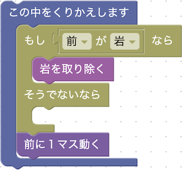

シンプルな条件分岐を使うステージで遊ぶことで、条件分岐に親しんでもらおうと思って作りました。
条件分岐を使わなくても、ひたすら「前に１マス動く」と「岩を取り除く」を繰り返せばクリアできますが、岩を取り除く作業を岩がない場所でも行うためペナルティとしてどんどん体力が減っていき、星１つになってしまうようになっています。
while True: if 前が岩: 岩を取り除く else: pass 前に１マス動く